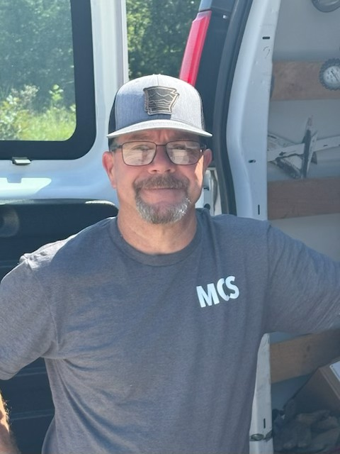

Owner & Lead Technician
With over 30 years of experience in commercial kitchen service, I take pride in providing honest, high-quality support to local businesses across Arkansas.
Our mission is simple: to provide quality service with a personal touch. As a “Mom & Pop” style service company, we believe in treating our customers like partners, not just transactions. We understand the importance of balancing fair pricing with excellent workmanship, and we strive to make every customer feel appreciated for choosing us. We are committed to being different from the corporate service providers who treat their customers as an afterthought. For us, it’s not about making a quick profit—it’s about earning long-term trust and delivering dependable service that keeps your kitchen running smoothly.
I began my career in service work back in 1989, working alongside my father in his McDonald’s franchise. From there, I went on to work with Bromley Parts and Service, gaining over 28 years of hands-on experience in the commercial foodservice industry. Over the years, I’ve earned my CFESA Master Technician certification and have had the opportunity to work in countless kitchens across central Arkansas—and even across all four corners of the state. With decades of experience, I’ve come to value more than just fixing equipment. I believe in building strong relationships with my customers, providing reliable service, and ensuring every job is done with fairness, honesty, and professionalism.